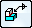

Weld Symbol command bar
Set options for commonly used weld symbols.
- Dimension Style Mapping
-
Specifies that the element-to-style mapping settings on the Dimension Style tab of the Solid Edge Options dialog box determine the dimension style to use for placing dimensions and annotations. When you set this option, Dimension Style is unavailable.
- Dimension Style
-
Lists and applies the available styles. This control is unavailable when Dimension Style Mapping is selected.
- Text scale
-
Applies a scale value to the current text height. Increasing or decreasing the scale changes the overall text size. The default value is 1.0.
- Properties
-
Defines or applies weld symbol property settings. To define or save settings, click the button to access the Weld Symbol Properties dialog box. To apply a saved setting, select the arrow and then select the name of the setting you want to apply.
- Angle
-
Specifies the orientation angle of the weld symbol and break line.

Tie To Geometry-
Extract weld symbol labels created in an assembly document into the draft document. When you set this option, drawing view edges that have weld labels applied in the assembly document are highlighted so you can extract the labels into the draft document.
Note:For a fillet weld, the weld symbol displays the bead length.
 Lock Dimension Plane
Lock Dimension Plane-
Sets the active dimension plane for the creation of PMI dimensions and annotations. The active dimension plane controls how values are calculated and how the text is displayed.
You are prompted to specify the dimension plane by clicking a planar face or reference plane. The plane remains locked until you unlock it by pressing F3.
 Referenced Geometry
Referenced Geometry-
Specifies that you want to select multiple edges, faces, or surfaces to be referenced by a single PMI annotation. You also can select this option when editing the annotation, to add or remove reference elements. Use the Select Reference Geometry command bar to accept the selection set, and then return to the hosting command workflow to finish adding or editing the annotation.

For more information, see Select multiple reference elements.